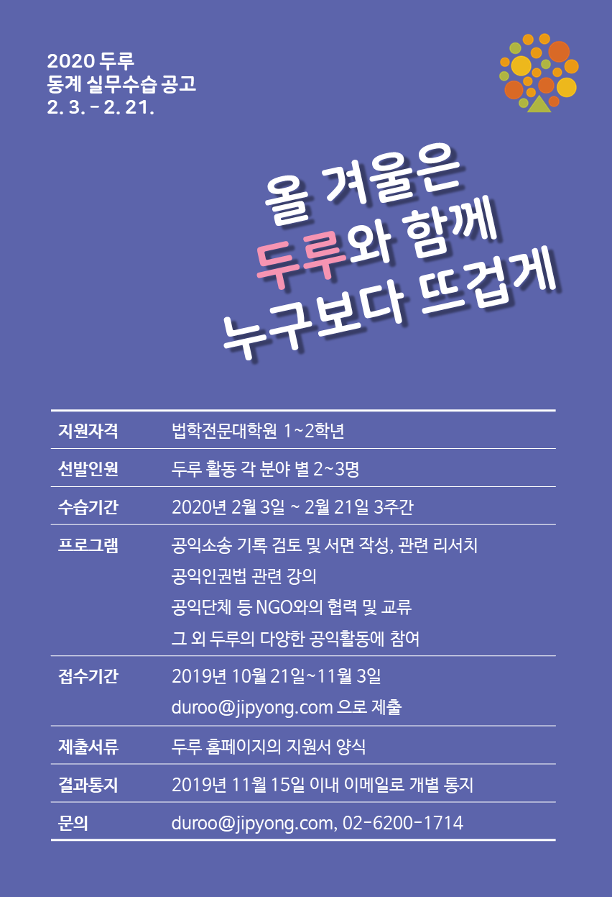
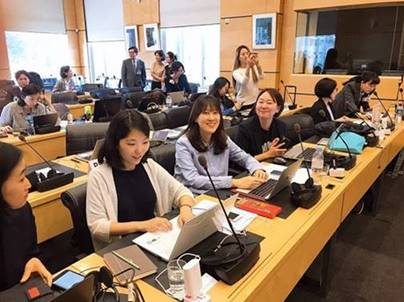

두루 활동
국제 인권
이주민, 난민의 권익을 옹호하고, 국내에서 활동하는 해외 NGO 및 국제기구의 설립 운영을 지원하며, 동남아시아 등 해외에 대한 법률 기타 지원활동을 합니다.
MORE두루 소식
MORE-
공지사항 두루 2020년 동계 실무수습 안내
가. 지원 자격 및 모집 인원 공익인권활동 분야에 적극적인 의지가 있는 로스쿨 1~2학년 모집 인원 : 10명 내외(각 분야 별 2~3명) 나. 실무수습 일시 및 장소 2020년 2월 3일(월) ~ 2월 21일(금) 3주간 사단법인 두루 사무실 (서울시 서대문구 충정로 60 KT&G 서대문타워 8층) 다. 실무수습 프로그램1) 사단법인 두루 소개2) 공익인권 활동 참여(소송 기록 검토, 소장・의견서 등 서면작성, 리서치, 재판 방청 등) 3) 공익인권법 관련 강의4) 공익단체 등 NGO와의 협력 및 교류5) 기타 사회공헌활동 ※ 구체적인 일정과 프로그램은 참가 학생 대상으로 공지할 예정입니다. 라. 제출 서류 및 접수처 지원 접수 : 2019년 10월 21일(월) ~ 11월 3일(일) 접수 : 첨부 지원서 양식으로 이메일 제출 : duroo@jipyong.com ※ 파일명 : “학교_지원자 이름” [예: OO대_김OO] ※ .docx 혹은 .pdf 형태로 제출하기 바랍니다. ※ 지원 양식을 꼭 지켜주시기 바랍니다. ※ 지원서 이외에 성적 증명서 등 증빙서류는 필요하지 않습니다. 선발 결과 발표 : 2019년 11월 15일(금) 이내 이메일로 선발 여부 개별 통지 문의 : 엄선희 변호사(02-6200-1714, shum@jipyong.com)
2019.10.21 -
뉴스레터 제5호 기사, 김진 변호사의 기대
안녕하세요, 두루에서 일하는 김진 입니다. 제가 두루에 합류한지도 벌써 4개월이 지났습니다. 첫 출근한 날인 참 더웠는데 벌써 찬 바람이 불고 낙엽이 지고 있네요. 아침 저녁으로 제법 추운데 건강은 잘 챙기고 계신지요? 두루 회원님들과 기부자님들께서 응원해주시고 늘 따뜻하게 격려해주신 덕에 저는 잘 적응해서 두루의 다른 구성원들과 함께 즐겁게 일하고 있습니다. 인사와 함께 저의 활동을 간단히 소개해볼까 합니다.
2019.11.15